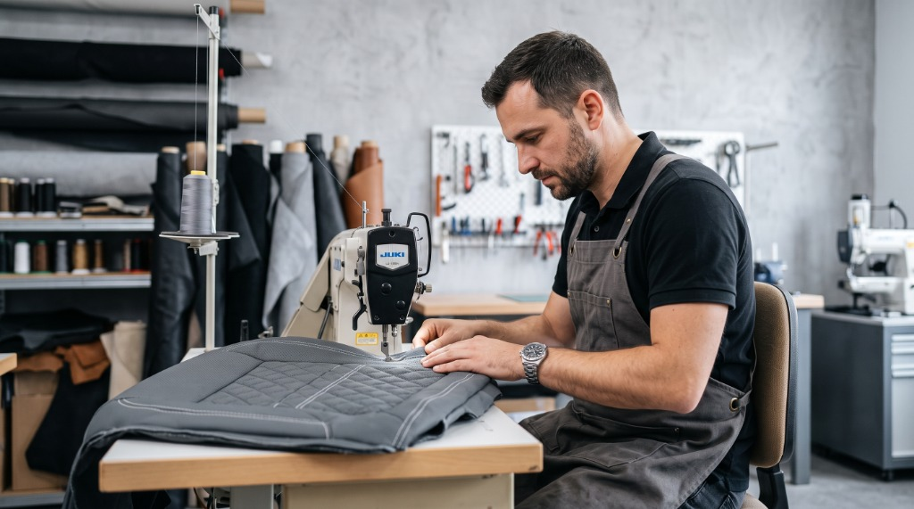

Sherif-Auto elevates automotive interiors through meticulous hand-crafted restoration, premium materials, and bespoke designs tailored to the luxury motorist.
Founded on a passion for fine craftsmanship and automotive design, Sherif Auto has spent over a decade restoring and transforming vehicle interiors. Based right here in Ait Iaaza, Taroudant, we view every project as a unique canvas—whether we are rebuilding structural foam for a classic restoration or executing flawless honeycomb stitching on a modern sports car.
Working with the absolute finest genuine leather, premium Alcantara, and industrial-grade durable threads, our master artisans seamlessly blend comfort with luxury. Every single stitch is meticulously aligned, tensioned, and finished with absolute precision to bring premium quality straight to your drive.

We operate at the intersection of traditional leathercraft, safety engineering, and modern automotive design.
We select only certified automotive-grade full-grain leather, genuine Italian Alcantara, and high-tensile UV-resistant threads. Every material is chosen for its tactile feel, rich aroma, and resilience under sun and wear.
No two interiors are identical. From custom honeycomb quilting and contrasting stitch paths to padded bolster enhancements, we build the textures and contours to reflect your individual style.
We reconstruct collapsed seat foam cores, shape custom contoured bolsters, and embed adjustable lumbar supports to align with your natural posture and optimize driving comfort.
True restoration preserves safety. We carefully recalibrate occupant sensors, reconnect integrated heating grids, and apply certified tear-away thread on airbag seams for factory-standard deployment safety.
We apply advanced UV-blocking finishes and spill-resistant barrier seals to our leather to prevent sun fading, staining, and friction wear, backed by our comprehensive warranty.
Crafted locally in Ait Iaaza, Taroudant, we blend time-tested leatherwork heritage with efficient turnarounds. We prioritize personal consultations and transparent project timelines.
Preview how our premium mechanical-guided stitching configurations look on luxury charcoal leather. Choose between our clean, structural upholstery patterns.
A classic, clean stitch line offering a minimal elegant profile. Typically selected for steering wheels, dashboard seams, and subtle accent panels.
How we transform worn interiors into bespoke luxury cabins, step by step.
We sit down to map your cabin vision. You select textures, stitch orientations, color tones, and piping details. We inspect the seat ergonomics and frame integrity.
We carefully unbolt seats and panels, remove old fabric, and repair damaged structure. High-density ergonomic foam padding is layered to restore factory support.
Patterns are drawn using customized templates. Hides are cut and assembled by master craftspeople using industrial sewing rigs and manual edge-stitching.
The new custom leather skins are tensioned onto the seats. Electronic heating grids and occupancy sensors are tested, and seats are carefully re-installed.
Ready to elevate your driving experience? Contact us for a free estimate or explore our design gallery to see what we can craft for your vehicle.